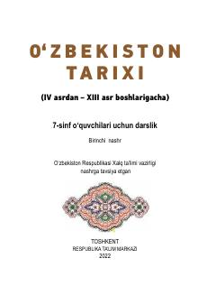

OT7-sinf oʻquvchilari uchun IV-XIII asrlar Oʻzbekiston tarixi darsligi.
Ushbu darslik umumiy oʻrta ta'lim maktablarining 7-sinf oʻquvchilari uchun moʻljallangan boʻlib, IV asrdan XIII asr boshlarigacha boʻlgan Vatanimizning oʻrta asrlar tarixini yoritadi. Unda qadimgi Turon va Movarounnahr hududlarida yashagan ajdodlarimizning ijtimoiy-siyosiy, iqtisodiy va madaniy hayoti, shuningdek, jahon sivilizatsiyasiga ulkan hissa qoʻshgan buyuk mutafakkirlar haqida ma'lumot beriladi.